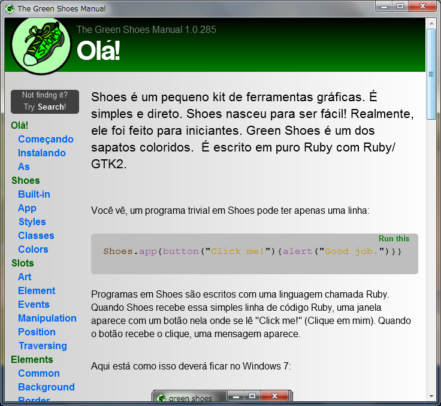

Ruby the Red Gem of Programming
This is an archived post
Index
Next
Green Shoes Portuguese Manual Project
September 14 2011, 5:42 AM
by ashbb

Max (deminew)
started
Green Shoes Portuguese Manual Project
on GitHub.
Really fantastic!
I don't understand Portuguese, but going to help as far as possible.
If you can translate English into Portuguese, please feel free to send your pull requests to Max even if one sentence. ;-)
ashbb
230 views and 0 responses